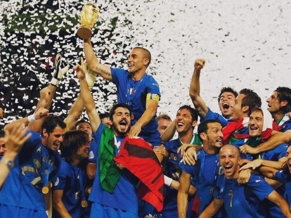
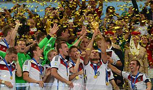
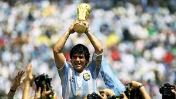
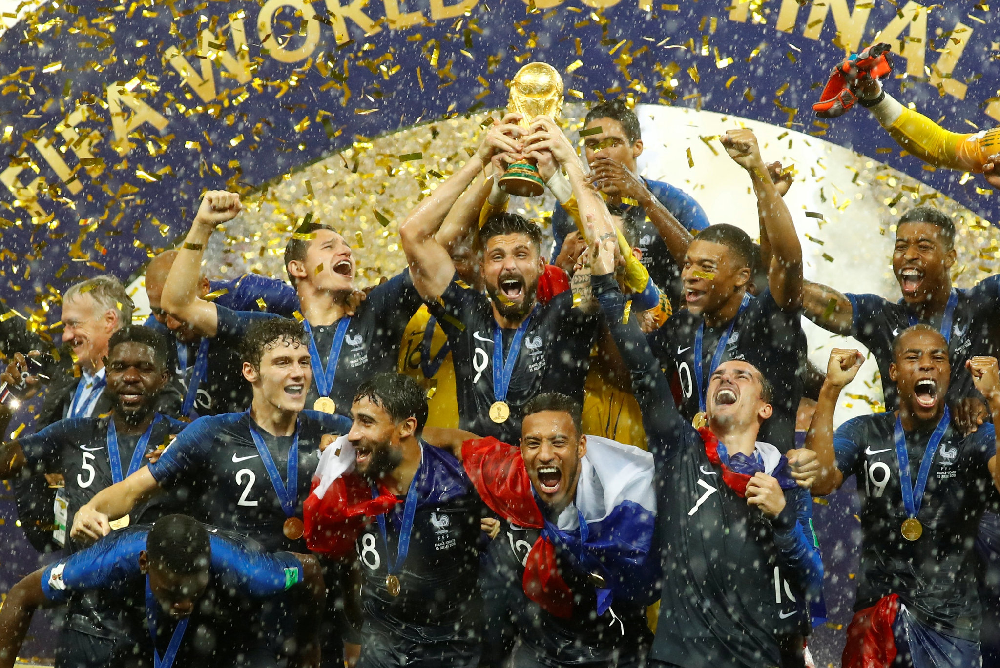
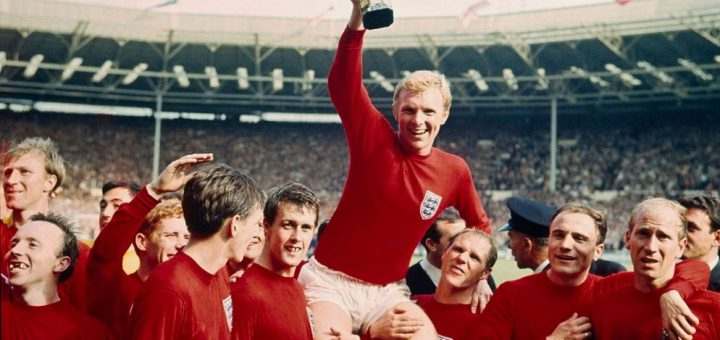
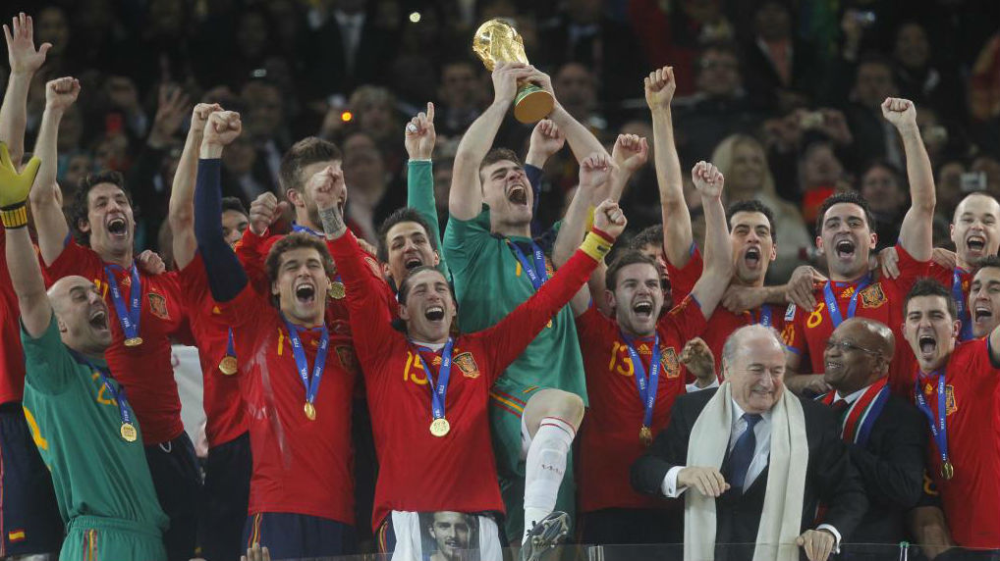

Copa Mundial de Futbol

La Copa Mundial de la FIFA, tambien conocida como Copa Mundial de Futbol, Copa del Mundo o simplemente Mundial, cuyo nombre original fue Campeonato Mundial de Futbol, es el principal torneo internacional oficial de futbol masculino a nivel de selecciones nacionales en el mundo.
Este evento deportivo se realiza cada cuatro años desde 1930, con la excepcion de 1942 y 1946, en los que se suspendio respectivamente debido al desarrollo y las consecuencias de la Segunda Guerra Mundial. Cuenta con dos etapas principales: un proceso clasificatorio en el que participan en la actualidad cerca de 200 selecciones nacionales y una fase final realizada cada cuatro años en una sede definida con anticipacion en la que participan 32 equipos (48 a partir de la edición de 2026) durante un periodo cercano a un mes. El balon oficial es fabricado por la compañia alemana de equipamiento deportivo Adidas.
La fase final del torneo es el evento deportivo de una sola disciplina mas importante del mundo(la final de Futbol de 2002)fue vista por mas de 1,100 millones de personas.
ha sido ralizada en 21 ocasiones,en las que ocho(paises futbolizados) corresponden a las potencias mundiales historicas y candidatos.
Selecciones de futbol mas exitosas del torneo:

- 1.Seleccion de Brasil (5 copas)
- 2.Seleccion de Italia(4 copas)
- 3.Seleccion de Alemania(4 copas)
- 4.Seleccion de Uruguay(2 copas)
- 5.Seleccion de Argentina(2 copas)
- 6.Seleccion de Francia(2 copas)
- 7.Seleccion de Inglaterra(1 copas)
- 8.Seleccion de España(1 copas)
Brasil
Es la selección mas exitosa en la historia de la Copa Mundial de Futbol, la conquistó en cinco oportunidades (1958, 1962, 1970, 1994 y 2002) y fue subcampeon en dos ocasiones (1950 y 1998). Es la única selección hasta ahora en haber participado en todas las copas del mundo. Tiene el record de ser el más ganador de la Copa FIFA Confederaciones con cuatro títulos (1997, 2005, 2009 y 2013)y fue finalista en otra ocasion (1999). En la Copa America es la tercera seleccion mas ganadora habiendola obtenido en nueve ocasiones (1919, 1922, 1949, 1989, 1997, 1999, 2004, 2007 y 2019),16 y ha sido once veces subcampeón (1921, 1925, 1937, 1945, 1946, 1953, 1957, 1959, 1983, 1991, 1995 y 2021). Actualmente se encuentra liderando la Tabla historica de la Copa del Mundo y la Tabla historica de la Copa Confederaciones. Siempre se ha clasificado para la Copa Mundial de Futbol sin jugar ninguna repesca.
Italia
Es, junto con Alemania, el segundo equipo nacional más exitoso en la historia de la Copa Mundial, por detras de Brasil, después de conquistar cuatro títulos en las ediciones de 1934, 1938, 1982 y 2006. Además es el tercer equipo que ha disputado más finales. Es también la tercera selección que más ediciones ha disputado, pues solamente ha faltado en 3 ocasiones de 21 posibles.De 1934 a 1950, con la victoria de dos torneos consecutivos y las suspensiones debidas a la guerra, mantuvo el título del mundo incluso durante 16 años
Alemania
La selección alemana ha participado en diecinueve ediciones de la Copa Mundial de Fútbol y fue anfitriona en las ediciones de 1974 y 2006. La ha conquistado en cuatro ocasiones, en 1954, 1974,1990 y 2014,15 siendo junto a Italia, la segunda mejor en el palmarés y en número de participaciones, únicamente superada por Brasil.También es la selección que más finales ha disputado con ocho. Se encuentra en la segunda posición general de la clasificación histórica de este certamen, superada por Brasil.
Uruguay
Uruguay en el plano internacional ha logrado dos Copas del Mundo (1930 y 1950), alcanzado otras tres semifinales (1954, 1970 y 2010), ha ganado dos medallas de oro en los juegos olímpicos (1924 y 1928) ediciones reconocidas por FIFA como "Campeonatos del Mundo amateurs".En el Congreso de 1924 la FIFA decidió que tomaría a su cargo la coorganización de los Torneos Olímpicos de Fútbol. El cálculo de los torneos mundiales de las copas mundiales FIFA comienza en 1930, no obstante, en sus archivos históricos le da reconocimiento especial a las dos conquistas olímpicas. En 2021 la FIFA manifestó de que la federación mundial no permitía a la celeste mostrar 4 estrellas en la camiseta,sin embargo, tras la defensa por parte de la AUF ante el ente rector del fútbol mundial, se reversó esta petición. En lo que respecta a torneos continentales, es junto con Argentina, la más veces ganadora de la Copa América, con 15 títulos conseguidos cada una (1916, 1917, 1920, 1923, 1924, 1926, 1935, 1942, 1956, 1959-II, 1967, 1983, 1987, 1995 y 2011). Además ganó la Copa de Oro de Campeones Mundiales, torneo internacional amistoso, organizado por la AUF, para celebrar el cincuentenario de la primera copa mundial de fútbol.
Argentina
La Albiceleste es el cuarto equipo nacional más exitoso en la historia de la Copa Mundial: la conquistó en dos oportunidades (1978 y 1986) y fue finalista en otras tres ocasiones (1930, 1990 y 2014). Además, es junto a Uruguay el seleccionado que más veces se adjudicó la Copa América, ganándola en quince ocasiones (1921, 1925, 1927, 1929, 1937, 1941, 1945, 1946, 1947, 1955, 1957, 1959-I, 1991, 1993 y 2021), y el que más subcampeonatos logró en la competición, con catorce (1916, 1917, 1920, 1923, 1924, 1926, 1935, 1942, 1959-II, 1967, 2004, 2007, 2015 y 2016). También, en 1992 se adjudicó la «Copa Rey Fahd» renombrada a partir de 1997 como Copa FIFA Confederaciones, en tanto que en 1995 y 2005 disputó el partido definitorio de dicho torneo.
Francia
Ha participado en quince ediciones de la Copa Mundial de Fútbol, de las cuales fue campeona en 1998 como local, tras vencer en la final a Brasil por 3-0, y en Rusia 2018, luego de derrotar a Croacia por 4-2. Además, fue finalista en el Mundial 2006, donde perdió ante Italia en definición por penaltis. También ha estado presente en nueve ediciones de la Eurocopa donde ha logrado dos títulos. El primero siendo local en la Eurocopa 1984 donde derrotó en la final por 2-0 a España. Luego ganó la Eurocopa 2000, jugada en Bélgica y los Países Bajos, venciendo a Italia en la final con gol de oro por 2-1. Ha ganado en dos ocasiones la Copa FIFA Confederaciones en las ediciones de 2001 y 2003, en una ocasión la Liga de Naciones en la edición de 2020-21, y también posee una Copa Artemio Franchi lograda en el año 1985. En los Juegos Olímpicos, no consiguió destacarse, aunque con un equipo amateur de juveniles obtuvo la Medalla de oro en Los Ángeles 1984, luego de derrotar a la selección brasileña por 2:0 en la final disputada en el Estadio Rose Bowl. Francia y Argentina son las únicas selecciones del mundo que han ganado la Copa Mundial, los Juegos Olímpicos, la Copa Confederaciones, la Copa Intercontinental de Selecciones (Copa Artemio Franchi) y su respectiva copa regional (Eurocopa/Liga de Naciones y Copa América, respectivamente).
Inglatera
Si bien es cierto que contó con importancia en sus primeros años donde el fútbol comenzaba a ganar relevancia, no tiene un grueso palmarés. Entre sus mejores actuaciones destaca un título de la Copa Mundial de Fútbol, en la edición en la que fueron locales, en 1966. Dicho título marcó el inicio de su segunda época de oro que duraría hasta 1971 y su época de plata entre 1986 y 1991. Pese a ello, nunca ha podido ganar la Eurocopa. Tampoco participó en la Copa Confederaciones, creada en 1992.
España
La selección española ha disputado quince ediciones del Mundial y fue la anfitriona en 1982. En 2010, cosechó el mayor éxito de su historia al proclamarse campeona del mundo tras ganar en la final por 0-1 a los Países Bajos con gol de Andrés Iniesta, convirtiéndose así en la octava selección nacional en conseguirlo y en la primera de Europa en lograrlo fuera de su continente. Se sitúa actualmente en la séptima plaza en la clasificación histórica de la competición y también es la séptima en el palmarés, igualada con la selección inglesa. Los reconocimientos más destacados por la conquista mundialista fueron el «Premio Príncipe de Asturias de los Deportes» y el «Premio Laureus al Mejor Equipo Internacional» del año. Además, fue nombrada en 2013, por sexta vez consecutiva, el «Mejor Equipo» del año por la FIFA.